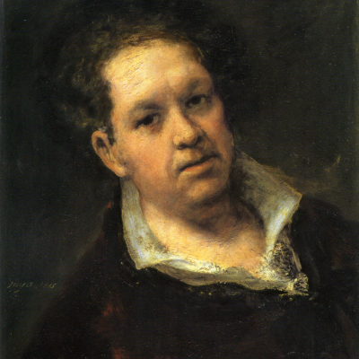
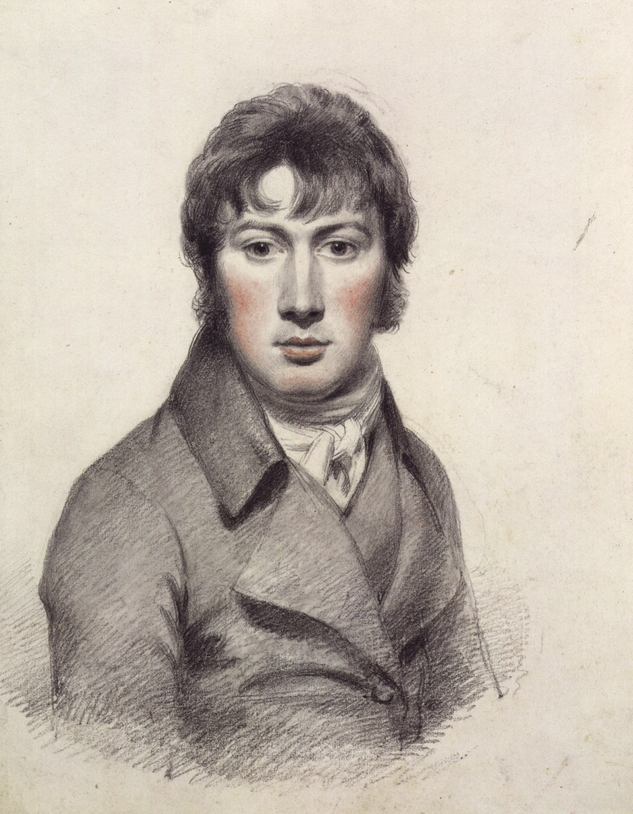
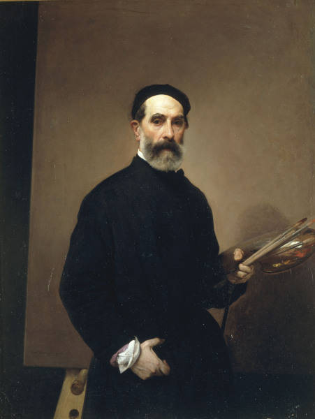
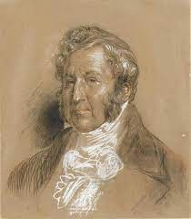
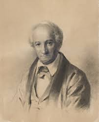
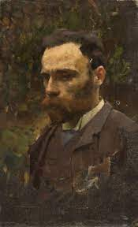
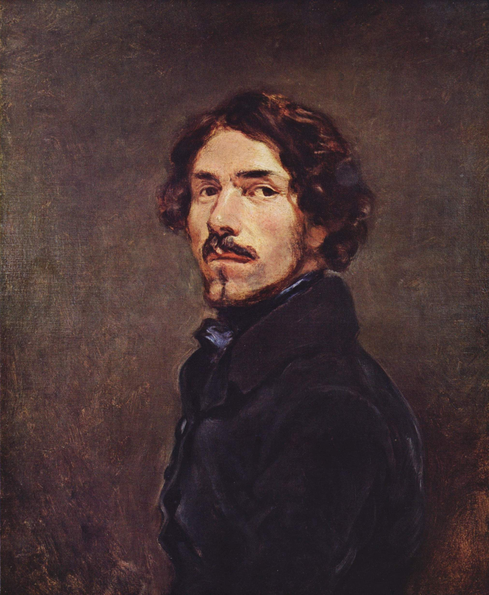
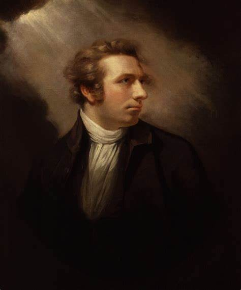

Lista de Artistas

- Nombre: Caspar David Friedrich
- Fecha: 05/09/1774 - 07/05/1849
- Campo: Pintura
-

- Nombre: Francisco de Goya
- Fecha: 30/03/1746 - 16/04/1828
- Campo: Pintura, Impresión
-

- Nombre: Théodore Géricault
- Fecha: 26/09/1791 - 26/01/1824
- Campo: Pintura, Litografía

- Nombre: John Constable
- Fecha: 11/06/1776 - 31/03/1837
- Campo: Pintura
-

- Nombre: Francesco Hayez
- Fecha: 10/02/1791 - 21/12/1882
- Campo: Pintura
-

- Nombre: Joseph Mallord William Turner
- Fecha: 23/04/1775 - 19/12/1851
- Campo: Pintura, Impresión
-

- Nombre: Louis-Philippe Crépin
- Fecha: 1772 - 26/11/1851
- Campo: Pintura
-

- Nombre: Maxim Vorobiev
- Fecha: 06/08/1787 - 30/08/1855
- Campo: Pintura
-

- Nombre: John Martin
- Fecha: 19/07/1789 - 17/02/1854
- Campo: Pintura, Ilustración, Grabado
-

- Nombre: John William Waterhouse
- Fecha: 06/04/1849 - 10/02/1917
- Campo: Pintura
-

- Nombre: Gustave Doré
- Fecha: 06/01/1832 - 23/01/1883
- Campo: Pintura, Ilustración, Grabado
-

- Nombre: Eugéne Delacroix
- Fecha: 26/04/1798 - 13/08/1863
- Campo: Pintura, Litógrafo
-

- Nombre: Martinus Rorbye
- Fecha: 1803 - 1848
- Campo: Pintura
-

- Nombre: Johann Heinrich
- Fecha: 7/02/1741 - 16/04/1825
- Campo: Pintura, Dibujo
-